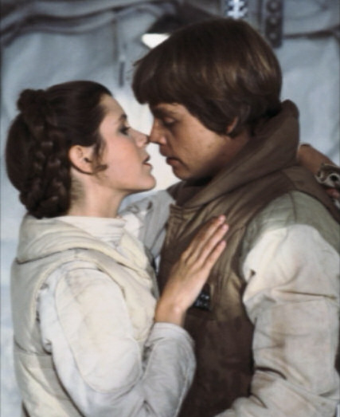

Filip Hráček, Google Czech Republic
Američané možná telefon potřebují, my ne. Máme dostatek poslíčků.
Je nemožné sestavit létající stroj těžší než vzduch.
Letadla jsou zajímavé hračky, ale nemají žádný vojenský význam.
Kdo by proboha chtěl herce i slyšet?
Akciový trh překonal pomyslný bod, pod který už nikdy nepůjde.
Nukleární energie nikdy nebude dostupná člověku. K tomu by muselo být možné uměle rozbít atom.
Na světě existuje trh pro zhruba pět počítačů.


Předpověď →
Z alespoň jedné hlavy v této místnosti vzejde projekt, který bude mít do pěti let 10 miliónů uživatelů po celém světě.
Filip Hráček, Google Czech Republic